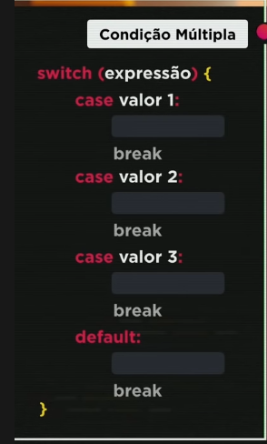

Digite o nome:
Digite sua idade:
Qual o seu sexo:
Digite o nome:
Digite sua idade:
Qual o seu sexo:
O if é usado para condições entre sim e não e tem a suas vantagens e desvantagens.
Com condições fixas podemos com o Switch case. Não é apropriado para representar intervalos de valores, nesse caso é melhor o 'if'.
